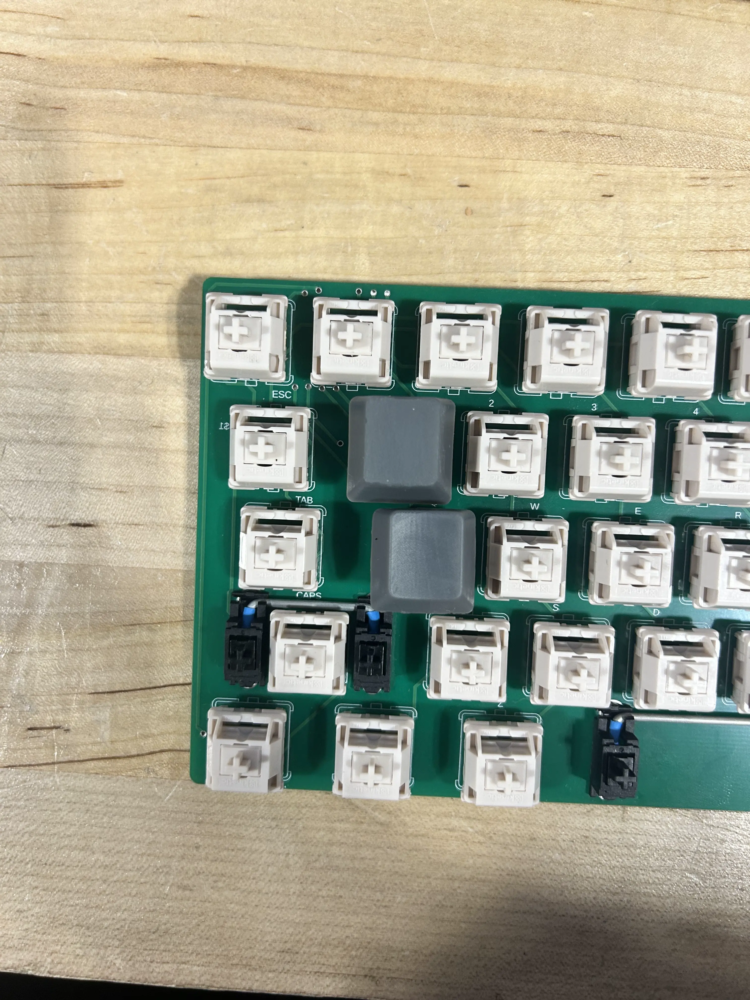
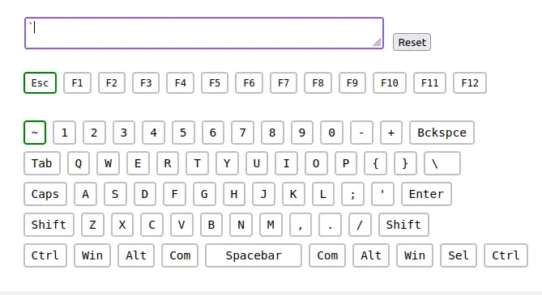
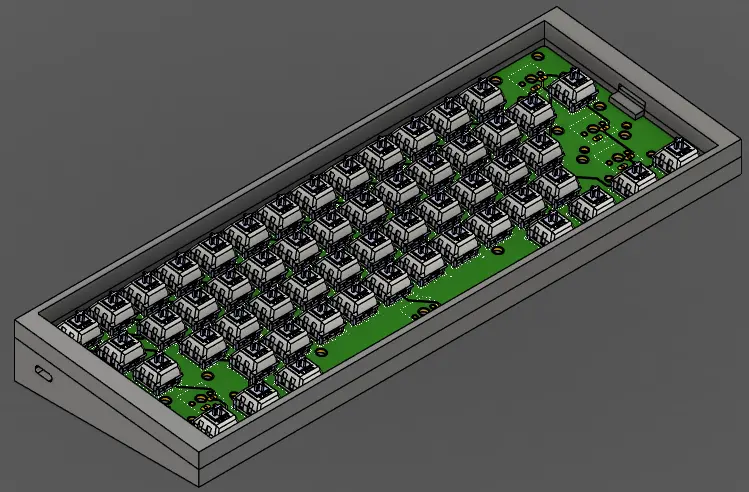

junior week jan. 15, 2026
same resin printer btw
so the batch of switches i made got absolutely destroyed. exact same orientation as my first resin print, with this print even having a new fill of resin added and still all got screwed.
i then tested an orientation on the flat plane of the keycap, and got similar, horrible results.
maybe there was something i did wrong, but seeing how i changed nothing from my first print leads me to believe that i wasn't at fault.
eventually, mr.l told me to just print it on the top of the keycap, and just sand it down due to how easy resin is when sanded.
i ended up doign that, and the end results turned out amazingly
final results
going forward, i'm going to just print the rest like that and just sand it down. also, the r3 and r2 keycaps seem to be pretty accurate to the original size

r3 and r2 keycap together
pcb updates
i decided to remove the kb2040 and test if adding a diode would fix the problem with the escape key. i spent way too long removing the kb2040 and then miles help me wired up the final diode, supergluing it in place
plugging it back in and testing, the escape (and grave key [which is used when you click fn + esc]) ended up working

case updates
tim guided me through part of the process of creating my case, leading to this

using a spring screw (if that's what they're called) to adjust the pcb (by tightening the screw, the case clamps less on the pcb. by loosening it, the clamp will tighten on the pcb)